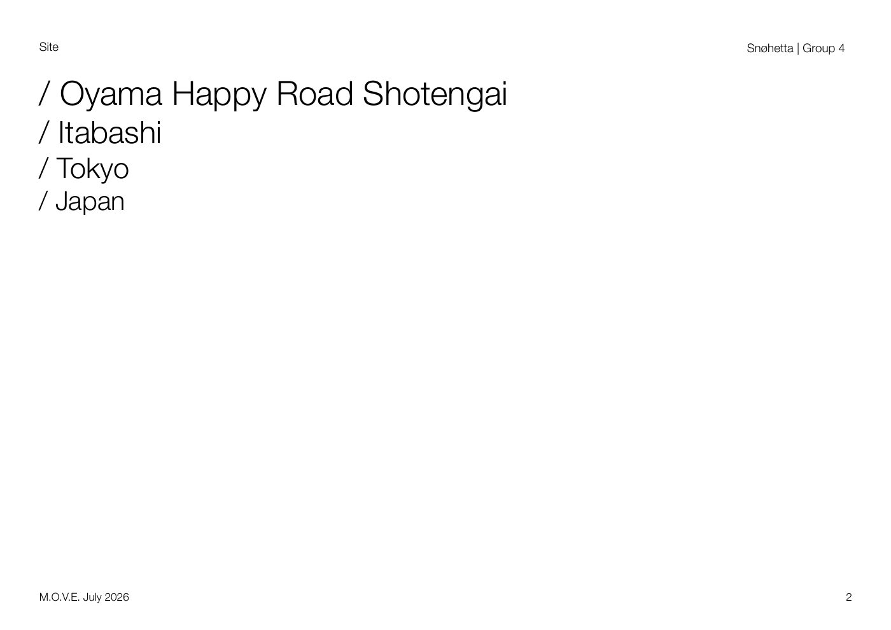
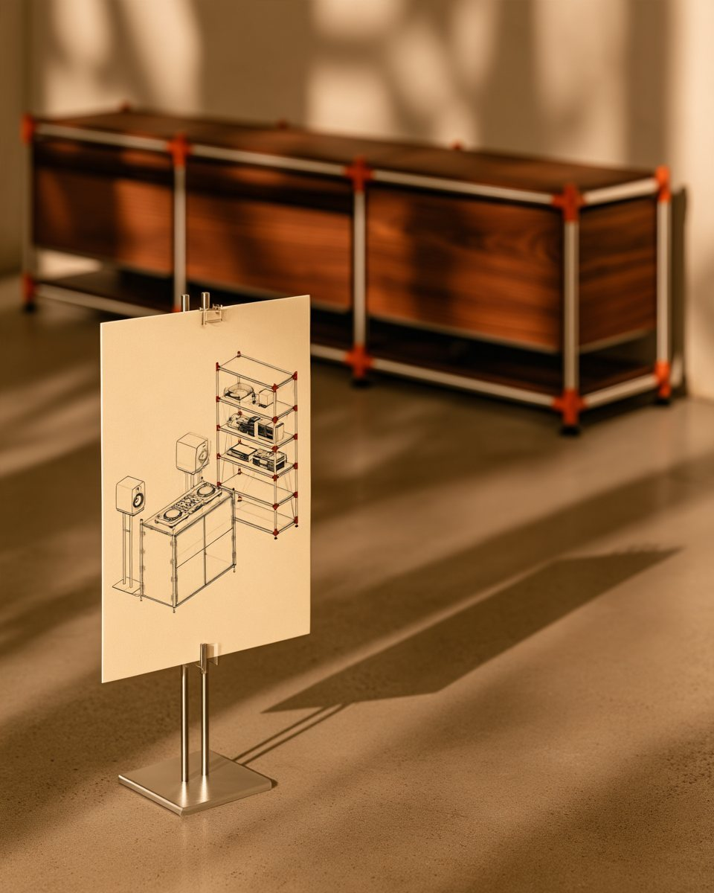

Selected work
Ten projects across the ways I work — designing cities and streets, giving places an identity, and building tools that act on spatial data. Grouped by practice; the analytical studies sit under Research.
Design
01 — Nuova Porta Genova
Masterplan · Milan · 2026Linear Flow: from infrastructure to urban commons.


01 · Challenge
The former railway lands of Porta Genova cut a hard fragment through the city. The question: could that scar become a continuous civic landscape — mobility, housing, culture, water, and biodiversity in one regenerative framework?
02 · Context
International Urban Design Studio (HKU, MUDP1002), Milan — Semester II 2026. Instructor: Ian Ralph. Tools: QGIS · Rhino · Adobe.
03 · Design
The analysis resolved into six new districts — Corta Studentesca, Oasi Urbana, Passage della Arti, Bosco del Benessere, Corta della Stazione, Corta Creativa — and twenty spatial episodes that stitch the corridor back into the surrounding fabric.
04 · Outcomes
- +10,000new residents
- 7,000new homes
- 309,575 m²residential
- 53,624 m²commercial
- 38,243 m²civic
- 6 / 20districts / episodes
02 — Pokfulam Waterfront
Masterplan · Hong Kong · 2025


A waterfront redevelopment masterplan for Pokfulam on Hong Kong Island — opening a continuous public waterfront and weaving student co-living, elderly housing, pocket parks, and residential blocks into the steep coastal slope. A single green-blue promenade threads three activated waterfront zones, with terraced, planted architecture that steps down with the hillside.
03 — M.O.V.E.
Oyama Happy Road Shotengai · Tokyo · 2026Movable · Operable · Versatile · Extension — a kit that lets a dissolving Tokyo market street keep reinventing itself.

01 · Challenge
Oyama Happy Road is a 560-metre covered arcade in Itabashi, Tokyo — a socio-spatial spine that has served its neighbourhood for generations. It is now being cut in two: Road 26 is driven through the middle of it, and City Towers Itabashi Oyama adds more than 4,000 m² of commercial floorspace beside it. The typology is not dead, but it is dissolving. The studio brief asked whether architecture can restore life to what is not yet dead — whether design can regenerate the spirit of a place without over-writing the very thing that gives it identity.
02 · Concept — adaptability
Rather than redesign or preserve the market laneway, we designed for change. M.O.V.E. turns a dissolving shotengai street into an adaptable archipelago that binds individuals and interests together — and, for the passer-by, brings the feeling of finding an unexpected treasure in a monotonous urban fabric.
03 · Proposal — two scales
Macro: a light timber module with perforated textile that spans the laneway and gives it a roof, a shadow, and a threshold. Micro: street furniture drawn from the street's own vernacular — the beer crates stacked outside izakaya, the green fencing of Shinjuku Station — reusable, adaptable, moveable, stackable, and held by the community rather than the developer.
Place identity
04 — Spatial Branding
Place identity · 2023Staraya Ladoga & Khabarovsk.

Place-identity systems for two Russian territories. 'Staraya Ladoga — a fragment of antiquity' builds a heritage identity from Russian ornament and the legacy of Nicholas Roerich. 'Khabarovsk — Heart of the Far East' is a complete visual system — custom typography, a distinctive palette, and a coat-of-arms mark — applied across transit stops, billboards, and posters.
Build
05 — Tochka
Spatial-AI product · 2025An AI agent for location networks.
Upload your branches and ATMs; in minutes Tochka returns a ranked storymap of where to open, close, or relocate — built natively on Hong Kong's open spatial data (CSDI), so leadership decides without waiting weeks for a consultancy.
06 — SiteSense
Spatial-AI product · 2025A generative urban copilot.
Ask a question in plain language; SiteSense returns a live, dynamic map-storymap — pulling OpenStreetMap data via the Overpass API and weaving maps, metrics, and narrative into a single answer.
Interactive & web
07 — Basquiat StoryMap
Storymap · New York · 2025A scrollable Mapbox storymap of Jean-Michel Basquiat's New York.
Locations, works, and biography are bound to the map — the view flies between sites across the city as you scroll through the story.

08 — From Garden Tradition to Public Feeling
Research · Britain · 2025An interactive research piece on British gardens and how they are felt today.
It moves from the history of garden design to a data-driven "emotional atlas" — public evaluation of gardens, the emotional structure behind it, charts, and a map.

09 — SoHo Street-View Imagery
Spatial analysis · New York · 2025An interactive street-view-imagery sitemap of SoHo, New York.
Google Street View sampled across the district and mapped to read the visual and green character of the streetscape — part of an HKU MUD street-view study.

10 — Creative Operating Layer
AI systems · Hong Kong · 2026How can AI, automation and intelligent workflows change the way a branding agency works?
A speculative case study for a branding agency: one AI and automation layer across strategy, marketing and design, walked through with a modular furniture brand, from brief to territories, campaign and a working 3D configurator.

Let's build something for cities.
Open to collaborations, talks, and publications — based in Hong Kong.